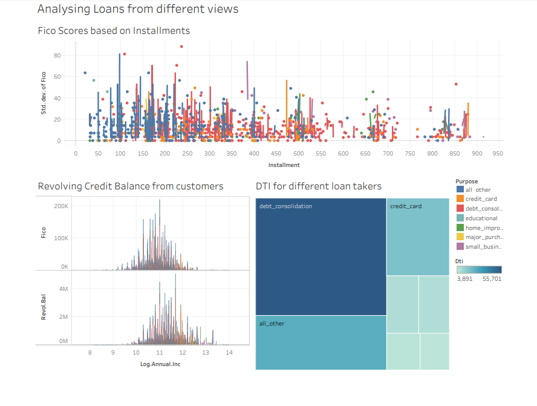

Telcos perform forensics on dropped calls and poor sound quality, but call detail records flow in at a rate of millions per second. This high volume makes pattern recognition and root cause analysis difficult, and often those need to happen in real-time, with a customer waiting for answers. Delay causes attrition and harms servicing margins. Hortonworks DataFlow (HDF™) can ingest millions of CDRs per second into Hortonworks Data Platform, where Apache™ Storm or Apache Spark™ can process them in real-time to identify troubling patterns. HDP facilitates long-term data retention for root cause analysis, even years after the first issue. This CDR analysis can be used to continuously improve call quality, customer satisfaction and servicing margins.
Accurate diagnosis of customer churn and enabling of alerts when a customer exhibits behavior that suggests imminent defection is a critical requirement for telcos. By looking at multiple factors, such as comments on social media and declining usage, along with historical data that show patterns of behavior that suggest churn, companies can predict when a customer is at risk of defecting. The MapR Converged Data Platform helps bring together customer transaction data and communication streams from customers in real-time that can show how customers feel about their service. This is critical for detecting and addressing customer satisfaction issues in real time.
CSPs need to protect their customers and their bottom line by proactively detecting fraudulent activities. They can analyze usage data, location-specific data and customer account data in real time to model baseline “normal” behavior. The MapR Converged Data Platform can enable building of predictive models that can flag anomalous phone calls that might indicate theft or hacking, both in business-to-business and business-to-consumer environment.
CSPs can make more accurate and relevant recommendations to customers in real time by analyzing customer call logs, usage and customer satisfaction data combined with social media data to understand customer preferences and behavior. These recommendations can include cross-selling new services, matching pricing plans, or making targeted offers for sports or music enthusiasts. The MapR Converged Data Platform delivers real-time capabilities that enable recommendations to be delivered at just the right time and place.
Bandwidth demand is growing 60% per year, leaving operators increasingly unable to respond to spikes. With an Cloudera enterprise data hub, gain a real-time view to allocate network resources more efficiently, build predictive capacity models, and adopt a next-best-investment approach.
Big Data integration, pharmaceutical big data analytics, internal and external collaboration, portfolio decision support, more efficient clinical trials, faster time to market, improved yields, improved safety - these are just a few of the benefits pharmaceutical companies around the world achieve by tapping into the full power of their pharma big data.
Merck optimized its vaccine yields by analyzing manufacturing data to isolate the most important predictive variables for a “golden batch”. Merck’s leaders had long relied on Lean manufacturing to grow volumes and reduce costs, but it became increasingly difficult to discover incremental ways to enhance yields. They looked into Open Enterprise Hadoop for new insights that could further reduce costs and improve yields. Merck turned to Hortonworks for data discovery into records on 255 batches of one vaccine going back 10 years. That data had been distributed across 16 maintenance and building management systems and it included precise sensor data on calibrations settings, air pressure, temperature, and humidity. After pooling all the data into Hortonworks Data Platform and processing 15 billion calculations, Merck had new answers to questions it had been asking for a decade. Among hundreds of variables, the Merck team was able to spot those that optimized yields. The company proceeded to apply those lessons to their other vaccines, with a focus on providing quality drugs at the lowest possible price. Watch Doug Henschen’s InformationWeek interview with George Llado of Merck.
One Hortonworks pharmaceutical customer uses HDP for a single view of its supply chain and their self-declared “War on Waste”. The operations team added up the ingredients going into making their drugs, and compared that with the physical product they shipped. They found a big gap between the two and launched their War on Waste, using HDP big data analytics to identify where those valuable resources were going. Once it identifies those root causes of waste, real-time alerts in HDP notify the team when they are at risk of exceeding pre-determined thresholds.
The goal of Translational Research is to apply the results of laboratory research towards improving human health. Hadoop empowers researchers, clinicians, and analysts to unlock insights from translational data to drive evidence-based medicine programs. The data sources for translational research are complex and typically locked in data siloes, making it difficult for scientists to obtain an integrated, holistic view of their data. Other challenges revolve around data latency (the delay in getting data loaded into traditional data stores), handling unstructured and semi-structured types of data, and bridging lack of collaborative analysis between translation and clinical development groups. Researchers are turning to Open Enterprise Hadoop as a cost-effective, reliable platform for managing big data in clinical trials and performing advanced analytics on integrated translational data. HDP allows translational and clinical groups to combine key data from sources such as: Omics (genomics, proteomics, transcription profiling, etc) Preclinical data Electronic lab notebooks Clinical data warehouses Tissue imaging data Medical devices and sensors File sources (such as Excel and SAS) Medical literature Through Hadoop, analysts can build a holistic view that helps them understand biological response and molecular mechanisms for compounds or drugs. They’re also able to uncover biomarkers for use in R&D and clinical trials. Finally, they can be assured that all data will be stored forever, in its native format, for analysis with multiple future applications.
IT systems cannot economically store and process next generation sequencing (NGS) data. For example, primary sequencing results are in large image format and are too costly to store over the long term. Point solutions have lacked the flexibility to keep up with changing analytical methodologies, and are often expensive to customize and maintain. Open Enterprise Hadoop overcomes those challenges by helping data scientists and researchers unlock insights from NGS data while preserving the raw results on a reliable, cost-effective platform. NGS scientists are discovering the benefits of large-scale processing and analysis delivered by HDP components such as Apache Spark. Pharmaceutical researchers are using Hadoop to easily ingest diverse data types from external sources of genetic data, such as TCGA , GENBank , and EMBL. Another clear advantage of HDP for NGS is that researchers have access to cutting-edge bioinformatics tools built specifically for Hadoop. These enable analysis of various NGS data formats, sorting of reads, and merging of results. This takes NGS to the next level through: Batch processing of large NGS data sets Integration of internal with publically available external sequence data Permanent data storage for large image files, in their native format Substantial cost savings on data processing and storage.
Real-World Evidence (RWE) promises to quantify improvements to health outcomes and treatments, but this data must be available at scale. High data storage and processing costs, challenges with merging structured and unstructured data, and an over-reliance on informatics resources for analysis-ready data have all slowed the evolution of RWE. With Hadoop, RWE groups are combining key data sources, including claims, prescriptions, electronic medical records, HIE, and social media, to obtain a full view of RWE. With big data analytics in the pharmaceutical industry, analysts are unlocking real insights and delivering advanced insights via cost-effective and familiar tools such as SAS® ,R®, TIBCO™ Spotfire®, or Tableau®. RWE through Hadoop delivers value with optimal health resource utilization across different patient cohorts, a holistic view of cost/quality tradeoffs, analysis of treatment pathways, competitive pricing studies, concomitant medication analysis, clinical trial targeting based on geographic & demographic prevalence of disease, prioritization of pipelined drug candidates, metrics for performance-based pricing contracts, drug adherence studies, and permanent data storage for compliance audits.
HDP Uses Real-World Data to Deliver Real-World Evidence Real-World Evidence (RWE) promises to quantify improvements to health outcomes and treatments, but this data must be available at scale. High data storage and processing costs, challenges with merging structured and unstructured data, and an over-reliance on informatics resources for analysis-ready data have all slowed the evolution of RWE. With Hadoop, RWE groups are combining key data sources, including claims, prescriptions, electronic medical records, HIE, and social media, to obtain a full view of RWE. Analysts are unlocking real insights and delivering advanced analytic insights via cost-effective and familiar tools such as SAS:registered: ,R:registered:, TIBCO:tm: Spotfire:registered:, or Tableau:registered:. RWE through Hadoop delivers value with optimal health resource utilization across different patient cohorts, a holistic view of cost/quality tradeoffs, analysis of treatment pathways, competitive pricing studies, concomitant medication analysis, clinical trial targeting based on geographic & demographic prevalence of disease, prioritization of pipelined drug candidates, metrics for performance-based pricing contracts, drug adherence studies, and permanent data storage for compliance audits.
When all data is readily accessible for analysis, business and engineering end-users can improve current products and design the next generation, based on the insights they can extract themselves.
Manufacturers want to minimize the inventory that they keep on hand and prefer just-in-time delivery of raw materials. On the other hand, stock-outs can cause harmful production delays. Sensors, and RFID tags and IoT in manufacturing reduce the cost of capturing supply chain data, but this creates a large, ongoing flow of data. Hadoop can store this unstructured data at a relatively low cost. That means that manufacturers have more visibility into the history of their supply chains and they are able to see large patterns that might be invisible in only a few months of data. This intelligence can give manufacturers greater lead-time to adjust to supply chain disruptions. It also allows them the connected factory to reduce supply chain costs and improve margins on the finished product.
High-tech manufacturers use sensors to capture data at critical steps in the manufacturing process. This data is useful at the time of manufacture, to detect problems while they are occurring. However, some subtle problems—the “unknown unknowns”—may not be detected at time of manufacture. Nevertheless, those may lead to higher rates of malfunction after the product is purchased. When a product is returned with problems, the manufacturer can do forensic tests on the product and combine the forensic data with the original sensor data from when the product was manufactured. This big data in manufacturing adds added visibility, across a large number of products, helps the manufacturer improve the process and products to levels not possible in a data-scarce environment.
Today’s manufacturing workflows involve sophisticated machines coordinated across pre-defined, precise steps. One machine malfunction can stop the production line. Premature maintenance has a cost; there is an optimal schedule for maintenance and repairs: not too early, not too late. Machine learning algorithms can compare maintenance events and machine data for each piece of equipment to its history of malfunctions. These algorithms can derive optimal maintenance schedules, based on real-time information and historical data. This The use of manufacturing predictive analytics can help maximize equipment utilization, minimize P&E expense, and avoid surprise work stoppages.
Quality compliance costs 100 times more to correct a problem during maintenance than in pre-production. Reduce development timelines up to 50% with an enterprise data hub while responding to performance concerns in real-time and eliminating defects prior to manufacture.
We will be getting the data from various sources like emails, Patients records, devices, diagnostics etc and when it is combined together in streamlined manner, the providers of healthcare can easily recognize inefficiencies in the costs, risks involved. Here they use our solutions for quicker analysis, metrics to do different types actionable data insights on structured and unstructured data, probably real time. With the services we are providing, patient records are analyzed and anomalies such as frauds in billing will be detected. While patient privacy is being guaranteed, healthcare providers gain a 360-degree view of the patient by storing, processing, and correlating.
Of course, the latest technologies have made huge difference in healthcare and hospitals have already adopted. With these advanced measurements, Patients are monitored in live and the data that is streamed will be captured into cluster so that whenever a patient gets any problem, hospital staff will be alerted automatically. Using this stream data, healthcare predictive analytics can be done apart and Machine learning algorithms will be written to predict the happening of any emergency even before it could be detected with a bedside visit.
It is not just stopped! The services we provide will be highly useful for the patients with heart disease As you know, the heart attack can be happened any time. When the patient is in hospital , he will be monitored regularly. But it may not be same when they are discharged as many ppl ignore the prescription of the doctor. This ignorance is the main cause for the High/ low BP, Weight gain or sometimes death also. So, to avoid this kind of severe problems, we at Bigdatamatica are providing a personalized solution for patients, where they can monitor themselves or by members of family by just sitting at home.
According to health statistics, Autism is one of major challenges to be faced by the world now-a-days. It affects 1 in 100 children at an annual cost estimated at more than $100 billion. Told by experts, it takes eighteen months to detect autism in a person, who has been affected. Sadly, more than 1 in 4 cases are still undiagnosed at 8 years of age. Many people don’t know that the most common diagnostic test typically takes 2 hours to administer and score.
Dr. Dennis Wall is Director of the Computational Biology Initiative at the Harvard Medical School. In this presentation, he describes a process his team developed for low-cost, mobile screening for autism. It takes less than five minutes and relies on the ability to store large volumes of semi-structured data from brief in-home tests administered and submitted by parents. Wall’s lab also used Facebook to capture user-reported information on autism.
Artificial intelligence running on those huge data sets helps maximize efficiency of diagnosis without loss of accuracy. This approach, in combination with data storage on a Hadoop cluster, can be used for other innovative machine learning diagnostic processes.
Our company uses analytics on speech-to-text records from calls to the call center to identify potential fraudsters.
Our platform will be able to identify providers who demonstrate aberrant billing trends and patterns in Hospitals. We mine data to reveal hidden patterns and relationships that lead to potential waste, overutilization of services and alert providers for investigation.
The doctor can match symptoms to a larger patient database in order to come to an accurate diagnosis faster and more efficiently.
Treating a patient personally is definitely a big thing to improve his health condition. Bigdatamatica’s services provide real-time patient data access so that the treatment decisions can be adjusted in a timely manner.
As mentioned above Healthcare facilities can provide proactive care by continuously monitoring patient vital signs from various smart, connected devices. We stream this data in real-time to detect changes and predict a patient’s need for effective interventions.
Detect and prevent fraud by enriching and analyzing full data sets at rest and streaming in real- time across systems. Build machine learning models that predict cybercrime, money-laundering, and insider threats faster and with near-perfect accuracy.
Every day, large retail banks take thousands of applications for new checking and savings accounts. Bankers that accept these applications consult 3rd-party risk scoring services before opening an account. They can (and do) override do-not-open recommendations for applicants with poor banking histories.
A 360-degree customer view drives down acquisition costs, prevents switching, and increases lifetime value. Deliver contextually relevant experiences, personalized recommendations, and targeted offers by correlating behavior, transaction, and location data.
Financial services institutions need to analyze structured and unstructured data about their customers in order to offer optimal service. The MapR Platform helps to understand customers’ needs and to consistently optimize each customer’s experience. Counterparty Risk Analytics
When engaging in a business transaction with another party, the risk of doing business with that party must be considered. The MapR Platform helps to deliver reliable access to data that drive a counterparty risk analytics system.
Rather than analyzing samples of data, AI incorporates statistical and advanced analytics to review entire populations for anomalies.AI, Machine Learning technologies can enable auditors to automate tasks that have been conducted manually for decades, such as counting inventories or processing confirmation responses. And as a result, auditors can be liberated to focus on enhancing quality by evaluating advanced analytics, spending more time exercising their professional judgment, and providing greater insights.
Making new products and services available to consumer card holders is an ongoing initiative for banks. With the MapR Platform, credit card companies can gain insights from their data for recommendations and fraud detection.
